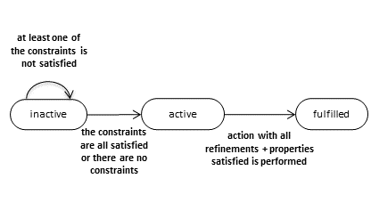

This document specifies the expected behaviour of an ODRL Evaluator, a piece of software that performs computations based on a set of policies and a certain state of the world.
The Open Digital Rights Language (ODRL) is a policy expression language that can be used to represent permitted, prohibited, and obligated actions over a certain asset.
The ODRL Information Model formally defines the core abstract concepts of the model and their properties by means of an OWL 2 Ontology (available at https://www.w3.org/ns/odrl/2/), which is described in the ODRL Vocabulary & Expression specification.
The ODRL ontology can be used as a data model to represent machine-readable Policies and associate them with digital or analog assets. By using a machine-readable language to represent policies, ODRL implementations can provide useful functionalities such as those of a policy search engine, a policy compatibility checker, an access control system, a monitoring system, or a policy planning system, among others.
However, neither the specification of the model (in a text form) nor the vocabulary (in an OWL ontology) accurately describes the behaviour of an ODRL Evaluator. The objective of an ODRL Evaluator is to determine as output:When the ODRL Evaluator evaluates Permissions, it is expected to work in at least one of these two scenarios:
More precisely, the Evaluator uses as input:
The ODRL Evaluator requires a formal representation of the state of the world to perform computations on both the access control and the policy monitoring scenarios. This state of the world may include current date, current location of the assignee or the history of performed actions. This document does not formally specify how to represent the necessary entities (e.g. country codes). The formal representation of the world can be a set of RDF triples. The existence of these triples does not entail their represented world is a reality: the factuality of the class instances is not entailed, and hypothetical computations are possible. The implementor of the ODRL Evaluator may want to describe the factuality of relevant class instances. RDF triples to represent the state of the world may be generated as observations from the world generated by third parties (extrinsic), by the ODRL Evaluator user or by any other source (intrinsic). Some examples of these state of the world RDF triples are:
odrl:function within the policies.Regarding actions, we assume that attempted or executed actions are described in RDF by specifying at least:
type (a list of actions types is available in the
ODRL Common Vocabulary); performer of the action;object upon which the action is carried out;atTime property.
There are three ODRL Policy subclasses (Agreement, Offer, Set), plus four non-normative ODRL Policy subclasses (Assertion, Privacy, Request, Ticket). Direct instances of the odrl:Policy class must be understood as policy odrl:Set policies. This subsection describes how are these policies to be understood in relation to semantics.
odrl:Set policy must be considered by an ODRL Evaluator. The odrl:Set is not necessarily linked to odrl:Offer nor odrl:Agreement.odrl:Offer policy must not be considered by an ODRL Evaluator. It is created by an odrl:Assigner as a mere proposition.odrl:Agreement policy must be considered by an ODRL Evaluator as any other odrl:Set policy. It represents the accord between (at least) one odrl:Assigner and a odrl:Assignee. An instance of odrl:Agreement may have a way for the odrl:Assigner to trace to its related odrl:Offer.
The deontic modalities of permissions, prohibitions and obligations can be represented in ODRL as instances of the classes
odrl:Permission, odrl:Prohibition and odrl:Duty.
Instances of the class odrl:Duty may have the following different meanings in ODRL:
odrl:Duty is an Obligation of a odrl:Policy
when the odrl:Policy refers to it by means of the odrl:obligation property.
odrl:Duty represents a Condition for a odrl:Permission
when the odrl:Permission refers to it by means of the odrl:duty property.
odrl:Duty represents a Consequence for a odrl:Duty
when the odrl:Duty refers to it by means of the odrl:consequence property. odrl:Duty represents a Remedy for a odrl:Prohibition
when the odrl:Prohibition refers to it by means of the odrl:remedy property. In addition to this:
odrl:Constraint is a Constraint of a odrl:Rule when the rule
refers to it by means of the odrl:constraint property.odrl:Constraint is a Refinement when an odrl:Action, odrl:AssetCollection or odrl:PartyCollection refers to it by means of the odrl:constraint property. The concepts (objects) to be understood by an ODRL Evaluator therefore include: Policy, Permission, Prohibition, Obligation, Condition, Consequence, Remedy, Refinement, Constraint and State of the World. Here follows a list of properties (with their possible values) needed by the ODRL Evaluator:
type,
performer, object,...) that matches with the values
described in the Rule (i.e. action, assignee, target)
is actually performed at a given instant of time and its performance is represented
in the state of the world.The process for computing the satisfaction state of Constraints, the satisfaction state of Refinement, and the performance state of an Action is left to individual implementations. But given these values, all ODRL Evaluators should agree on the value of the activation state and deontic states of the rules.
The mechanisms for computing the activation of Permissions, Prohibitions, and Obligations and the violation or fulfillment of Prohibitions and Obligations are all different. Therefore we continue by discussing the semantics of Permissions, Prohibitions, and Obligations in separated sections.
A Permission can be limited by duties, like making a payment, we call these Conditions, and it can also be limited by Constraints (in time, in space, etc.). In addition, the definition of the permitted action or the asset and party collection can be refined with Refinements. The evaluation of these Conditions (duties), Constraints and Refinements determine whether the Permission is active or not. In particular, a Permission is active if:
If the Permission is active, the action is permitted. If one of those conditions is not met, the Permission is inactive. When an action, which is regulated by an active permission is performed, the permission is used by such an action.
In the access control scenario: when an action is attempted, if there is not an active permission that permits such an action, it means that the action is not permitted and it is blocked.
In the monitoring scenario: when an action is performed (and it is represented in the state of the world), if there is no active permission to do so (i.e. there is no active permission regulating a class of action to which the executed action belongs) and the default setting for the ODRL Evaluator is set to "everything is prohibited unless explicitly permitted" a violation should be generated. In the following examples of permissions, as we will analyse one permission at a time, we will not deal with the generation of violations for permissions.
Please note that namespaces are used, so that http://example.com/constraint/ is simplified by
"constraint:", http://example.com/policy/ is simplified by "policy:", etc.
Example description
A permission may have its action limited (in time, in space, etc.) without any Condition (Duty) or Refinement.
This is the situation of the following case, similar to Example 13
in the ODRL Information Model 2.2. The permission below allows the target asset document:1234 to be distributed,
it includes the constraint that the permission may only be exercised until 2018-01-01.
The permission is granted by the organization party:16.
{
"@context": "http://www.w3.org/ns/odrl.jsonld",
"@type": "Set",
"uid": "http://example.com/policy/13",
"permission": [{
"target": "http://example.com/document/1234",
"assigner": "http://example.com/party/16",
"action": "distribute",
"constraint": [{
"@id": "http://example.com/constraint/1",
"leftOperand": "dateTime",
"operator": "lt",
"rightOperand": { "@value": "2018-01-01", "@type": "xsd:date" }
}]
}]
}
Expected behaviour of the Evaluator
The ODRL Evaluator has to calculate first the activation state. The constraint must be evaluated on the state of the world, which must include a representation of the current time (for example by using the Time Ontology in OWL). As long as the current time is before the first day of 2018, the Permission is active. When the first day of 2018 is passed, the Permission is inactive. (The activation of this type of permission does not depend on the actions attempted by the agents).
Access control scenario:type is distribute and its object is equal to
the target of the permission document:1234)
and the Permission is active then the action can be executed. The table below shows the input and the output of the Evaluator in the different cases.
| Example | Policy | World | satisfaction of constraint:1 |
access control activation of policy:13 |
Attempted Action | access control |
|---|---|---|---|---|---|---|
| E13-1 | policy:13 | We are in 2017 | satisfied | active | distributedocument:1234 |
attempted action can be executed |
| E13-2 | policy:13 | We are in 2019 | not-satisfied | inactive | distributedocument:1234 |
attempted action can not be executed |
Monitoring scenario:
| Example | Policy | World | satisfaction of constraint:1 |
monitoring activation of policy:13 |
|---|---|---|---|---|
| E13-3 | policy:13 | We are in 2017 and the action distribute of document:1234 was perfomed |
satisfied | active |
| E13-4 | policy:13 | We are in 2019 and the action distribute of document:1234 was perfomed |
not-satisfied | inactive |
Example description
The example below is similar to Example 14 in the ODRL Information Model 2.2.
It allows the target asset document:1234 to be printed and also include a refinement indicating that the resolution
of the printing action must be less than or equal to 1200 dpi.
The permission is granted by the organization party:616.
{
"@context": "http://www.w3.org/ns/odrl.jsonld",
"@type": "Set",
"uid": "http://example.com/policy/14",
"permission": [{
"target": "http://example.com/document/1234",
"assigner": "http://example.com/party/616",
"action": [{
"rdf:value": { "@id": "odrl:print" },
"refinement": [{
"@id": "http://example.com/refinement/14"
"leftOperand": "resolution",
"operator": "lteq",
"rightOperand": { "@value": "1200", "@type": "xsd:integer" },
"unit": "http://dbpedia.org/resource/Dots_per_inch"
}]
}]
}]
}
Expected behaviour of the Evaluator
Access control scenario:
type is print and
its object is equale to document:1234) and
its resolution is less than or equal to 1200 dpi (it satisfies the refinement))
then the Permission is active and the attempted action can be executed.
print of document:1234) but the refinement of the action is not satisfied
(i.e. its resolution is more than 1200 dpi), then the Permission is inactive.
Assuming that only this Permission is considered (this is because other permissions could regulate this action),
then the action is blocked and it cannot be executed.| Example | Policy | Attempted Action | satisfaction of refinement:14 |
access control activation of policy:14 |
access control |
|---|---|---|---|---|---|
| E14-1 | policy:14 | print of document:1234 and resolution less than 1200 dpi |
satisfied | active | attempted action can be executed |
| E14-1 | policy:14 | print of document:1234 and resolution more than 1200 dpi |
not-satisfied | inactive | attempted action can not be executed |
Monitoring scenario:
The Permission is always active because it has neither Constraints nor Conditions (Duties). Given a formal description a performed action. If such an action belongs to the class of actions regulated by the Permission then the permission is used by the performed action.
| Example | Policy | World | satisfaction of refinement:14 |
monitoring activation of policy:14 |
|---|---|---|---|---|
| E14-3 | policy:14 | print of document:1234 and resolution less than 1200 dpi was performed |
satisfied | active |
| E14-4 | policy:14 | print of document:1234 and resolution more than 1200 dpi was performed |
not-satisfied | active |
A Condition (duty) is fulfilled if all its constraints are satisfied and if its action, with all refinements satisfied, has been performed.
The life cycle of a duty is depicted in the figure below: 
Example description
The example below, similar to Example 22 in the ODRL Information Model 2.2, is a Permission that is constrained by a Duty (which we call Condition). The condition does not have Constraints, but its action has a refinement. In this example, the permission is granted by party:sony for party:billie to play the
target asset music:1999. The permission includes the condition to perform the compensate action that has a refinement of payAmount
of euro 5.00. The semantics of Permission requires that the compensate action (included in the duty) must be performed
before the play action in order to get an active permission to perform the play action.
{
"@context": "http://www.w3.org/ns/odrl.jsonld",
"@type": "Agreement",
"uid": "http://example.com/policy/22",
"permission": [{
"assigner": "http://example.com/party/sony",
"assignee": "http://example.com/party/billie",
"target": "http://example.com/music/1999.mp3",
"action": "play",
"duty": [{
"@id" : "http://example.com/condition/1",
"action": [{
"rdf:value": { "@id": "odrl:compensate" },
"refinement": [{
"@id" : "http://example.com/refinement/1",
"leftOperand": "payAmount",
"operator": "eq",
"rightOperand": { "@value": "5.00", "@type": "xsd:decimal" },
"unit": "http://dbpedia.org/resource/Euro"
}]
}]
}]
}]
}
Expected behaviour of the Evaluator
The condition has to be evaluated first. The Condition condition:1 does not have Constraints, so it is never inactive. It starts to be active and it is fulfilled
when in the state of the world there is a representation of an executed action that matches with the
the class of actions described in the duty. I.e. the type of the action is compensate, its
payAmount is equal to 5 euro, and (given that the odrl:compensatedParty of
the odrl:compensate action is not specified) its beneficiary is the assigner of the permission
party:sony. It is not required that the agent who performs the compensate action is
party:billie because, for example, a company can pay for its employees
(feature for an ODRL profile: it would be useful for actions of compensation or payment to contain a reference to a policy or a rule and to
the party for whom they are executed).
Once the condition (duty) has been evaluated, the permission can be evaluated. If the condition is active but it is not fullfilled then the Permission is inactive. If the ccondition is fulfilled then the Permission is active.
Access control scenario:
Given a formal description of the attempted action, if such an action belongs to the class of actions regulated by the Permission
(i.e. its type is play, its object is equal to music:1999.mp3, and its performer is
party:billie) and the Permission is active, then the action is performed, otherwise it is blocked.
| Example | Policy | World | activation of condition:1 |
deontic state of condition:1 |
access control activation permission:1 |
|---|---|---|---|---|---|
| E22-1 | policy:22 | Payment not made | active | not set | inactive |
| E22-2 | policy:22 | Payment made | active | fulfilled | active |
Monitoring scenario:
Given a formal description a performed action. If such an action belongs to the class of actions regulated by the Permission and the Permission is active then the permission is used by the performed action.| Example | Policy | World | activation of condition:1 |
deontic state of condition:1 |
monitoring activation permission:1 |
monitoring performance of attempted action |
|---|---|---|---|---|---|---|
| E22-3 | policy:22 | Payment not made | active | not set | inactive | not performed |
| E22-4 | policy:22 | Payment made | active | fulfilled | active | performed |
Example description
This is example is derived from example 22.1. There is a permission constrained by a duty (condition), that has constraints. The condition regulates an action that is refined by refinements. The permission below has the same description as given for Example 22 above with the addition that Duty is only activated on Sundays.
{
"@context": "http://www.w3.org/ns/odrl.jsonld",
"@type": "Agreement",
"uid": "http://example.com/policy/88",
"permission": [{
"assigner": "http://example.com/party/sony",
"assignee": "http://example.com/party/billie",
"target": "http://example.com/music/1999.mp3",
"action": "play",
"duty": [{
"@id" : "http://example.com/condition/1",
"action": [{
"@id" : "http://example.com/action/payment",
"rdf:value": { "@id": "odrl:compensate" },
"refinement": [{
"@id" : "http://example.com/refinement/1",
"leftOperand": "payAmount",
"operator": "eq",
"rightOperand": { "@value": "5.00", "@type": "xsd:decimal" },
"unit": "http://dbpedia.org/resource/Euro"
}]
}],
"constraint": [{
"@id" : "http://example.com/constraint/1",
"leftOperand": "dateTime",
"operator": "eq",
"rightOperand": { "@value": "Sunday", "@type": "xsd:string" }
}]
}]
}]
}
Expected behaviour of the Evaluator
The duty (condition) has to be evaluated. This duty has constraints. It starts to be inactive and it becomes active when its Constraints are all satisfied (the state of the world satisfies its Constraints, i.e. the current date is a Sunday). When it is active, it is also fulfilled when in the state of the world there is a representation of an executed action that matches with the the class of actions described in the duty.
The permission can be evaluated as follows: If the condition is inactive, the Permission is active. If the condition is active but it is not fullfilled, the permission is inactive. If the duty is fulfilled the Permission is active.
| Example | Policy | World | satisfaction of constraint:1 |
satisfaction of refinement:1 |
activation of condition:1 |
deontic state of condition:1 |
access control activation permission:1 |
|---|---|---|---|---|---|---|---|
| E22-11 | policy:88 | Saturday |
not satisfied | don't care | inactive | not set | active |
| E22-12 | policy:88 | Sunday unpaid by one of the performers |
satisfied | not satisfied | active | not set | inactive |
| E22-13 | policy:88 | Sunday paid by all the performers |
satisfied | satisfied | active | fulfilled by the action | active |
odrl:remedy for its violation. Example description
This is example is similar to Example 19 in the Information Model, with the differences that it has not a related permission and it has a Constraint. In this case, there is a prohibition that is constrained by a constraint. The policy below is a formal Agreement between two parties (the assigner and the assignee) that the action of archiving the specified digital asset is prohibited. The prohibition is specifically active only during the year 2024.
{
"@context": "http://www.w3.org/ns/odrl.jsonld",
"@type": "Agreement",
"uid": "http://example.com/policy/5555",
"prohibition": [{
"@id" : "http://example.com/prohibition/1",
"target": "http://example.com/photoAlbum:55",
"action": "archive",
"assigner": "http://example.com/MyPix:55",
"assignee": "http://example.com/assignee:55",
"constraint": [{
"@id" : "http://example.com/constraint/1",
"leftOperand": "dateTime",
"operator": "eq",
"rightOperand": { "@value": "2024", "@type": "xsd:gYear" }
}]
}]
}
Expected behaviour of the Evaluator
The prohibition has an activation state and a deontic state that have to be calculated.
In this example, the Constraint must be evaluated on the state of the world. As long as the current time is in 2024, the Prohibition is active. Before or after 2024 the Prohibition is inactive. When the Prohibition is active, if the prohibited action is performed there is a violation.
| Example | Policy | World | satisfaction of constraint:1 |
activation of prohibition:1 |
monitoring deontic state of prohibition:1 |
|---|---|---|---|---|---|
| E19-1 | policy:5555 | 2024 satisfied by a performed action |
satisfied | active | violated |
| E19-2 | policy:5555 | 2024 not satisfied by a performed action |
satisfied | active | not set |
| E19-3 | policy:5555 | 2025 satisfied by a performed action |
not satisfied | inactive | not set |
odrl:Duty class (it would be better to have an odrl:Obligation class) is active (its action,
with all refinements satisfied, should be perfomed) if all constraints of the Rule are satisfied, otherwise it is inactive.odrl:consequence of not fulfilling that obligation. Example description
This example of derived from Example 20 in the Information Model. It describes an obligation that is not constrained by a Constraint. The policy below is a formal Agreement between two parties (the assigner and the assignee) that the action to compensate the assigner for a payment amount of EU500.00 is obliged.
{
"@context": "http://www.w3.org/ns/odrl.jsonld",
"@type": "Agreement",
"uid": "http://example.com/policy/42",
"obligation": [{
"@id" : "http://example.com/obligation/1",
"assigner": "http://example.com/party/43",
"assignee": "http://example.com/party/44",
"action": [{
"rdf:value": {
"@id": "odrl:compensate"
},
"refinement": [
{
"leftOperand": "payAmount",
"operator": "eq",
"rightOperand": { "@value": "500.00", "@type": "xsd:decimal" },
"unit": "http://dbpedia.org/resource/Euro"
}]
}]
}]
}
Expected behaviour of the Evaluator
The Evaluator must determine the activation state and the deontic state of the obligation. The Obligation is always active. If the obliged action is performed then the obligation is fulfilled.
| Example | Policy | World | activation of obligation:1 |
monitoring deontic state of obligation:1 |
|---|---|---|---|---|
| 20-1 | policy:42 | obligation:1 acted by a performed action |
active | fulfilled |
| 20-2 | policy:42 | obligation:1 not acted by a performed action |
active | not set |
The RDF1.1. Semantics defines a model-theoretic semantics to determine the validity of RDF inference processes. A similar approach is followed by the OWL Semantics, a recommendation providing the direct model-theoretic semantics for OWL 2 and definingthe most common inference problems.
XPath (XML Path Language) is a language that can be used to navigate through elements and attributes in an XML document, and it also has formal semantics. XQuery (XML Query) is a query and functional programming language to query XML data. The "XQuery and XPath Formal Semantics" intends to complement the specification by defining the meaning of XQuery/XPath expressions with mathematical rigor; thus clarifying the intended meaning of the English specification, and ensuring that no corner cases are left out. For that regard grammar productions are given.
The POWDER specification provides a mechanism to describe and discover Web resources, and it also includes a Formal Semantics document. POWDER documents are XML documents which can be automatically converted, through a GRDDL transform, into a semantically rich version in RDF (POWDER-S). The "semantics" document describes how to make such transformation.
The PROV Ontology Working Group has produced 12 specifications to facilitate the interchange of provenance information in the Web (where provenance is …information about entities, activities, and people involved in producing a piece of data or thing, which can be used to form assessments about its quality, reliability or trustworthiness"). Besides having published a PROVO Ontology to facilitate the expression of provenance as RDF, the family of documents also define an EBNF notation "which allows serializations of PROV instances to be created in a compact manner", a set of constraints to "ensure that a PROV instance represents a consistent history of objects and their interactions that is safe to use for the purpose of logical reasoning" and statements in the PROV Data Model are seen "as atomic formulas in the sense of first-order logic […and…] the constraints and inferences specified in PROV-CONSTRAINTS as a first-order theory".
ODRL was created in in the early 2000's as an XML dialect to represent rights expressions to be used in the framework of Digital Rights Management systems; and its version 1.1 gained much spread [ODRL02]. Different ODRL profiles extended the vocabulary to satisfy the needs in different sectors. In 2011, an ODRL W3C Community Group was established, publishing soon after a new version 2.1 with major changes which included a new information model [Ianella15], a vocabulary [Ianella15b] and an Ontology [McRoberts15]. ODRL 2.1 became then a policy language.Other specifications in XML and similar to ODRL were MPEG-21 Rights Expression Language [Wang94], XACML or MPEG-21 Contracts Expression Language [Rodríguez15]. The MPEG-21 Media Contracts Ontology [Rodriguez16] defines an ontology to guide the generation of contracts as RDF, with a similar philosophy to that of the ODRL Ontology.
RDF documents instantiating the "Policy" class of the ODRL Ontology or using the XML or JSON syntaxes are called simply "ODRL Policies". The ODRL Ontology is already a formalization of the ODRL information model and vocabulary. The ontology of the version 2.1 consists of 1111 axioms with low complexity, but a comprehensive definition of each element (classes and relations) and a systematic definition of domains and ranges for the properties. Some ODRL concepts are represented as SKOS concepts ordered in SKOS collection. Reasoning with the ontology would be computationally inexpensive, but the usefulness of the possible reasoning tasks with the ontology is very limited.
The ODRL 2.1 Ontology is not the first ODRL Ontology and other ontologies had been proposed before [García05][Kasten10]. However, neither these ontologies nor the ODRL 2.1 Ontology directly supported any reasoning tasks of practical use. Other more generic rights ontologiesexist, claiming tocomprise the concepts of ODRL, with the ambition of facilitating interoperability. Thus, Delgado (2003) and Nadah (2007) have proposed ontologies as a bridge to make transformation between rights expression languages like ODRL and MPEG-21 REL, whereas Rodríguez (2013) underlined the similarities of seven policy languages with an ontology design pattern. Other alternative means of achieving interoperability do not require ontologies, as Guth did (2003) defining an abstract object model.
Some other formalizations of ODRL have been proposed with the purpose of determining whether a request is permitted given a set of policies and a certain history of events:we can name this task as theauthorisation decision.With that purpose, Gunter and Pucella had defined general logics for rights (2001 and 2002 respectively). Pucella then extended his work to model ODRL1.1 statements (2004) as formulas in a many-sorted first-order logic with equality,to determinewhether a permission was implied by a set of ODRL statements. Holzer et al. (2004) also enriched the authorisation decision modelling the dynamic aspects of licenses with finite-automata like structures (useful when the property of an asset is transferred, or when the number of plays is limited to a certain number of times). Chong et al. (2006) modelled licenses with multiset rewritingand logic programming (Prolog), including the ability to evaluate and merge licenses and to track the dynamic aspects of the rights evolution. Barth and Mitchell (2006) observed that the authorisation decision of a sequence of actions given a set of ODRL licenses is NP-complete because of the interval constraints, and proposed using propositional linear logic to grant efficient computability. Sheppard and Sfavi(2009) defined an algorithm for the authorisation decision with some of the most common ODRL elements, giving the pseudo-code for a virtual machine. Steyskal and Polleres (2015) defined an abstract syntax for expressing ODRL policies, where the dependencies among ODRL actions and the different conflict resolution strategies were explicitly considered in the rules for taking the authorisation decision.
Besides the problems of facilitating interoperability and making the authorisation decision, other problems of interest have been modeled with formalizations of ODRL. One of them is how to evaluate the compatibility and composition of licenses, useful when handling with differently licensed content or data. In this line, Gangadharan et al. (2007)proposed a matchmaking algorithm to analyze the compatibility of licenses and make license compositions; Jamkhedkarand Heileman (2008) showed how the combination of ODRL, CreativeCommons REL and the XrML (embryo of the MPEG-21 REL) licenses was possible with an abstract model and several rules. Villata and Gandon (2012) also defined a framework with algorithms to validate compatibility and to obtain composite licenses. Rotolo et al. (2013) defined a deontic logic system for the composition of licenses, with strict rules, defasible rules and defeater rules. More recent critics
It is evident that some policies can be used to grant automated access to resources. For example, verifying the execution of a payment can be automatically done. However, the satisfaction of some constraints cannot be digitally evaluated. Policies then play a double role, as automatable expressions in a computer system and as constracts with a certain legal value. Steyskal and Kirrane (2015) show how to use ODRL to specify access requests, data offers and agreements, distinguishing between enforceable and non-enforceable access policies, proposing an algorithm to auto-generate contracts for the latter.
In more recent efforts, de Vos et al. (2019) transforms ODRL expressions into Answer Set Programming to model policies and check compliance – specifically in the area of personal data processing, where ODRL has also been recently used (Esteves et al. 2021). Other profiles and initiatives have been proposed (Kim et al. 2020), on despite of several limitations found by Kebede at al. (2020).
In Fornara and Colombetti (2019) the ODRL 2.2 policy language has been extended in two directions. Firstly, by inserting in the model the notion of activation event, secondly, by considering the temporal aspects of obligations, permissions, and prohibitions
(e.g. expiration dates and deadlines) as part of the application independent model of policies.
References
[Wieringa93] Wieringa, R. J., & Meyer, J. J. C. (1993). Applications of deontic logic in computer science: A concise overview. Deontic logic in computer science, pp. 17-40 John Wiley & Sons.
[Gunter01] Gunter, C. A., Weeks, S. T., & Wright, A. K. (2001, January). Models and languages for digital rights. In System Sciences, 2001. Proceedings of the 34th Annual Hawaii International Conference on (pp. 5-pp). IEEE.
[ODRL02] Ianella, R. Open Digital Rights Language (ODRL) Version 1.1.
Formerly available online.
[Pucella02] Pucella, R., &Weissman, V. (2002). A logic for reasoning about digital rights. In Computer Security Foundations Workshop, 2002. Proceedings. 15th IEEE (pp. 282-294). IEEE.
[XACML03] Anderson, A., Nadalin, A., Parducci, B., Engovatov, D., Lockhart, H., Kudo, M., ... & Moses, T. (2003). extensible access control markup language (xacml) version 1.0. OASIS.
[Delgado03] Delgado, J., Gallego, I., Llorente, S., & García, R. (2003, December). IPROnto: An ontology for digital rights management. In 16th Annual Conference on Legal Knowledge and Information Systems, JURIX (Vol. 106).
[Guth03] Guth, S., Neumann, G., &Strembeck, M. (2003, October). Experiences with the enforcement of access rights extracted from ODRL-based digital contracts. In Proceedings of the 3rd ACM workshop on Digital rights management (pp. 90-102). ACM.
[Pucella04] RiccardoPucella , Vicky Weissman. A formal foundation for ODRL, In Proc. of the Workshop on Issues in the Theory of Security (WIST’04)
[Wang04] Wang, X. (2004). MPEG-21 rights expression language: Enabling interoperable digital rights management. IEEE MultiMedia, 11(4), 84-87.
[García05] García, R., Gil, R., Gallego, I., & Delgado, J. (2005, July). Formalising ODRL semantics using web ontologies. In Proc. 2nd Intl. ODRL Workshop (pp. 1-10).
[Barth06] Adam Barth and John C. Mitchell. Managing digital rights using linear logic. In LICS ’06: Proceedings of the 21st Annual IEEE Symposium on Logic in Computer Science, pages 127–136,Washington, DC, USA, 2006. IEEE Computer Society
[Chong06] Chong, C. N., Corin, R., Doumen, J., Etalle, S., Hartel, P., Law, Y. W., &Tokmakoff, A. (2006). LicenseScript: a logical language for digital rights management. Annals of Telecommunications, 61(3), 284-331.
[Nadah07] Nadia Nadah, Melanie Dulong de Rosnay, Bruno Bachimont. Licensing Digital Content With
A Generic Ontology: Escaping From The Rights Expression Language Jungle. ACM. ICAIL2007 - 11th international conference on Articial intelligence and law, Jun 2007, Stanford, United States. pp.65-69, 2007, Proceedings of the 11th international conference on Articial intelligence and law
[Gangadharan07] Gangadharan G.R., Weiss M., D’Andrea V., Iannella R. (2007) Service License Composition and Compatibility Analysis. In: Krämer B.J., Lin KJ., Narasimhan P. (eds) Service-Oriented Computing – ICSOC 2007. ICSOC 2007. Lecture Notes in Computer Science, vol 4749. Springer, Berlin, Heidelberg
[Jamkhedkar08] Pramod Arvind Jamkhedkar, Gregory L. Heileman. Conceptual Model For Rights. Proceedings of the 8th ACM workshop on Digital rights management Pages 29-38, 2008
[Sheppard09] Sheppard, N. P., &Safavi-Naini, R. (2009, November). On the operational semantics of rights expression languages. In Proceedings of the nineth ACM workshop on Digital rights management (pp. 17-28). ACM.
[Kasten10] Andreas Kasten and Rüdiger Grimm. Making the Semantics of ODRL and URM Explicit Using Web Ontologies. Virtual Goods, pages 77–91, 2010.
[Villata12] Serena Villata and FabienGandon. Licenses compatibilityand composition in the web of data. In The 2ndInternational Workshop on Consuming Linked Data.2012.
[Rodriguez13] Rodríguez-Doncel, V., Suárez-Figueroa, M. C., Gómez-Pérez, A., & Poveda-Villalón, M. (2013, October). License linked data resources pattern. In Proceedings of the 4th International Conference on Ontology and Semantic Web Patterns-Volume 1188 (pp. 84-87). CEUR-WS. org.
[Rotolo13] Antonino Rotolo, Serena Villata, and Fabien Gandon. A deontic logic semantics
for licenses composition in the web of data. In Int’l Conf. on Artificial Intelligence
and Law ICAIL, pages 111–120, 2013.
[Steyskal14] Simon Steyskal and Axel Polleres. Defining expressive access policies for linked data using the ODRL ontology 2.0. In Proceedings of the 10th International Conference on Semantic Systems, SEMANTICS 2014, Leipzig, Germany, September 4-5, 2014, pages 20–23, 2014
[Cabrio14] Elena Cabrio, Alessio Palmero Aprosio, and Serena Villata. These are your rights - A natural language processing approach to automated RDF licenses generation. In The Semantic Web: Trends and Challenges - 11th International Conference, ESWC 2014, Anissaras, Crete, Greece, May 25-29, 2014. Proceedings, pages 255– 269, 2014
[Ianella15b] R. Iannella, M. Steidl, S. Guth (eds). Open Digital Rights Language (ODRL) Version 2.1 – Common Vocabulary. Final Specification, W3C ODRL Community Group
http://www.w3.org/community/odrl/vocab/2.1/
[Ianella15] R. Iannella& S. Guth& D. Paehler& A. Kasten (eds). Open Digital Rights Language (ODRL) Version 2.1 – Core Model. Final Specification, W3C ODRL Community Group. http://www.w3.org/community/odrl/model/2.1/
[McRoberts15] M. McRoberts, V. Rodríguez Doncel. Open Digital Rights Language (ODRL) Version 2.1 – Ontology. Final Specification, W3C ODRL Community Group
http://www.w3.org/ns/odrl/2/
[Rodriguez15] Rodríguez, E., Delgado, J., Boch, L., & Rodríguez-Doncel, V. (2015). Media Contract Formalization Using a Standardized Contract Expression Language. IEEE multimedia, 22(2), 64-74.
[Steyskal15] Steyskal, S., &Kirrane, S. (2015). If you can't enforce it, contract it: Enforceability in Policy-Driven (Linked) Data Markets. In SEMANTiCS (Posters & Demos) (pp. 63-66).
[Steyskal15b] Steyskal, S., &Polleres, A. (2015, August). Towards formal semantics for ODRL policies. In International Symposium on Rules and Rule Markup Languages for the Semantic Web (pp. 360-375). Springer International Publishing.
[Rodriguez16] Rodríguez-Doncel, V., Delgado, J., Llorente, S., Rodríguez, E., & Boch, L. (2016). Overview of the MPEG-21 Media Contract Ontology. Semantic Web, 7(3), 311-332.
[DeVos19] De Vos, M., Kirrane, S., Padget, J., & Satoh, K. (2019, September). ODRL policy modelling and compliance checking. In International Joint Conference on Rules and Reasoning (pp. 36-51). Springer, Cham.
[Kebede20] Kebede, M. G., Sileno, G., & van Engers, T. (2020). A critical reflection on ODRL. Springer Lecture Notes Artificial Intelligence, AICOL2021, to appear.
[Kim20] Kim, J. M., & Chung, H. S. (2020). ODRL Ontology Extention Model and Prototype Design for the Specification of the Rights to use Digital Contents. Journal of Convergence for Information Technology, 10(1), 13-21.
[Esteves21] Esteves, B., Pandit, H. J., & Rodrıguez-Doncel, V. ODRL Profile for Expressing Consent through Granular Access Control Policies in Solid. To appear, proc. of the Workshop on Consent Management in Online Services, Networks and Things (COnSeNT) - co-located with IEEE European Symposium on Security and Privacy (EuroS&P 2021)
[Fornara19] N. Fornara and M. Colombetti. Using Semantic Web Technologies and Production Rules for Reasoning on Obligations, Permissions, and Prohibitions. AI Communications, vol. 32, no. 4, pp. 319-334, 2019.
Document Conventions
Prefix
Namespace
Description
odrl
http://www.w3.org/ns/odrl/2/
[[odrl-vocab]] [[odrl-model]]
rdf
http://www.w3.org/1999/02/22-rdf-syntax-ns#
[[rdf11-concepts]]
rdfs
http://www.w3.org/2000/01/rdf-schema#
[[rdf-schema]]
owl
http://www.w3.org/2002/07/owl#
[[owl2-overview]]
xsd
http://www.w3.org/2001/XMLSchema#
[[xmlschema11-2]]
skos
http://www.w3.org/2004/02/skos/core#
[[skos-reference]]
dcterms
http://purl.org/dc/terms/
[[dcterms]]
vcard
http://www.w3.org/2006/vcard/ns#
[[vcard-rdf]]
foaf
http://xmlns.com/foaf/0.1/
[[foaf]]
schema
http://schema.org/
schema.org
cc
https://creativecommons.org/ns#
creativecommons.org
ex
http://example.com/ns#